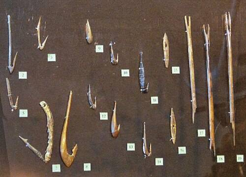
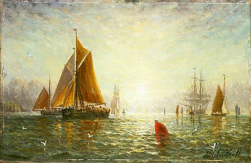
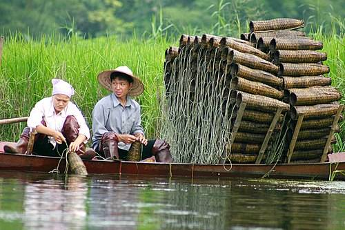

Fishing is the activity of trying to catch fish. Fish are often caught as wildlife from the natural environment (freshwater or marine), but may also be caught from stocked bodies of water such as ponds, canals, park wetlands and reservoirs. Fishing techniques include trawling, longlining, jigging, hand-gathering, spearing, netting, angling, shooting and trapping, as well as more destructive and often illegal techniques such as electrocution, blasting and poisoning.
The term fishing is also used more broadly to include catching aquatic animals other than fish, such as crustaceans (shrimp/lobsters/crabs), shellfish, cephalopods (octopus/squid) and echinoderms (starfish/sea urchins). The term is not normally applied to harvesting fish raised in controlled cultivations (fish farming). Nor is it normally applied to hunting aquatic mammals, where terms like whaling and sealing are used instead.
Fishing has been an important part of human culture since hunter-gatherer times. It is one of the few food production activities that has persisted from prehistory into the modern age, surviving both the Neolithic Revolution and successive Industrial Revolutions. In addition to fishing for food, people commonly fish as a recreational pastime. Fishing tournaments are held, and caught fish are sometimes kept long-term as preserved or living trophies. When BioBlitzes occur, fish are typically caught, identified, and then released.
According to the United Nations FAO statistics, the total number of commercial fishers and fish farmers is estimated to be 39.0 million.[1] Fishing industries and aquaculture provide direct and indirect employment to over 500 million people in developing countries.[2] In 2005, the worldwide per capita consumption of fish captured from wild fisheries was 14.4 kilograms (32 lb), with an additional 7.4 kilograms (16 lb) harvested from fish farms.[3]
History
Fishing is an ancient practice that dates back to at least the beginning of the Upper Paleolithic period about 40,000 years ago.[4] Isotopic analysis of the remains of Tianyuan man, a 40,000-year-old modern human from eastern Asia, has shown that he regularly consumed freshwater fish.[5][6] Archaeology features such as shell middens,[7] discarded fish bones, and cave paintings show that seafood was important for survival and consumed in significant quantities. Fishing in Africa is evident very early on in human history. Neanderthals were fishing by about 200,000 BC.[8] People could have developed basketry for fish traps, using spinning and early forms of knitting to make fishing nets[8] able to catch more fish.[9]
During this period, most people lived a hunter-gatherer lifestyle and were, of necessity, constantly on the move. However, where there are early examples of permanent settlements (though not necessarily permanently occupied) such as those at Lepenski Vir, they are almost always associated with fishing as a major source of food.
Trawling
The British dogger was a very early type of sailing trawler from the 17th century, but the modern fishing trawler was developed in the 19th century, at the English fishing port of Brixham. By the early 19th century, the fishers at Brixham needed to expand their fishing area further than ever before due to the ongoing depletion of stocks that was occurring in the overfished waters of South Devon. The Brixham trawler that evolved there was of a sleek build and had a tall gaff rig, which gave the vessel sufficient speed to make long-distance trips out to the fishing grounds in the ocean. They were also sufficiently robust to be able to tow large trawls in deep water. The great trawling fleet that built up at Brixham earned the village the title of 'Mother of Deep-Sea Fisheries'.[10]
This revolutionary design made large-scale trawling in the ocean possible for the first time, resulting in a massive migration of fishers from the ports in the south of England, to villages further north, such as Scarborough, Hull, Grimsby, Harwich and Yarmouth, that were points of access to the large fishing grounds in the Atlantic Ocean.
The small village of Grimsby grew to become the largest fishing port in the world[11] by the mid 19th century. An Act of Parliament was first obtained in 1796, which authorised the construction of new quays and dredging of the Haven to make it deeper.[12] It was only in 1846, with the tremendous expansion in the fishing industry, that the Grimsby Dock Company was formed. The foundation stone for the Royal Dock was laid by Albert the Prince consort in 1849. The dock covered 25 acres (10 ha) and was formally opened by Queen Victoria in 1854 as the first modern fishing port.
The elegant Brixham trawler spread across the world, influencing fishing fleets everywhere.[13] By the end of the 19th century, there were over 3,000 fishing trawlers in commission in Britain, with almost 1,000 at Grimsby. These trawlers were sold to fishers around Europe, including from the Netherlands and Scandinavia. Twelve trawlers went on to form the nucleus of the German fishing fleet.[14]
The earliest steam-powered fishing boats first appeared in the 1870s and used the trawl system of fishing as well as lines and drift nets. These were large boats, usually 80–90 feet (24–27 m) in length with a beam of around 20 feet (6 m). They weighed 40–50 tons and travelled at 9–11 knots (17–20 km/h; 10–13 mph). David Allen designed and made the earliest purpose-built fishing vessels in Leith, Scotland in March 1875, when he converted a drifter to steam power. In 1877, he built the first screw propelled steam trawler in the world.[15]
Steam trawlers were introduced at Grimsby and Hull in the 1880s. In 1890 it was estimated that there were 20,000 men on the North Sea. The steam drifter was not used in the herring fishery until 1897. The last sailing fishing trawler was built in 1925 in Grimsby. Trawler designs adapted as the way they were powered changed from sail to coal-fired steam by World War I to diesel and turbines by the end of World War II.
In 1931, the first powered drum was created by Laurie Jarelainen. The drum was a circular device that was set to the side of the boat and would draw in the nets. Since World War II, radio navigation aids and fish finders have been widely used. The first trawlers fished over the side, rather than over the stern. The first purpose-built stern trawler was Fairtry built in 1953 at Aberdeen, Scotland. The ship was much larger than any other trawlers then in operation and inaugurated the era of the 'super trawler'. As the ship pulled its nets over the stern, it could lift out a much greater haul of up to 60 tons.[16] The ship served as a basis for the expansion of 'super trawlers' around the world in the following decades.[16]
Techniques
Fishing techniques include hand gathering, spearfishing, netting, angling, bowfishing and trapping, as well as less common techniques such as gaffing, snagging, clubbing and the use of specially trained animals such as cormorants and otters. There are also destructive fishing techniques (such as electrocution, blasting and poisoning) that can do irreversible damage to the local ecosystems by killing/sterilizing entire fish stocks, habitat destruction and/or upsetting the equilibrium of interspecific competitions, and such practices are often deemed illegal and liable to criminal punishments.
Recreational, commercial and artisanal fishers use different techniques, and also, sometimes, the same techniques. Recreational fishers fish for pleasure, sport, or to provide food for themselves, while commercial fishers fish for profit. Artisanal fishers use traditional, low-tech methods, for survival in third-world countries, and as a cultural heritage in other countries. Usually, recreational fishers use angling methods and commercial fishers use netting methods. A modern development is to fish with the assistance of a drone.[28]
Why a fish bites a baited hook or lure involves several factors related to the sensory physiology, behaviour, feeding ecology, and biology of the fish as well as the environment and characteristics of the bait/hook/lure.[29] There is an intricate link between various fishing techniques and knowledge about the fish and their behaviour including migration, foraging and habitat. The effective use of fishing techniques often depends on this additional knowledge.[30] Some fishers follow fishing folklores which claim that fish feeding patterns are influenced by the position of the sun and the moon.
Impact
Community
For communities like fishing villages, fisheries provide not only a source of food and work but also a community and cultural identity.[
Economic
Some locations may be regarded as fishing destinations, which anglers visit on vacation or for competitions. The economic impact of fishing by visitors may be a significant, or even primary driver of tourism revenue for some destinations.
Semantic
A "fishing expedition" is a situation where an interviewer implies they know more than they do to trick their target into divulging more information than they wish to reveal. Other examples of fishing terms that carry a negative connotation are: "fishing for compliments", "to be fooled hook, line and sinker" (to be fooled beyond merely "taking the bait"), and the internet scam of phishing, in which a third party will duplicate a website where the user would put sensitive information (such as bank codes).
Religious
Fishing has had an effect on major religions,[48] including Christianity,[49][50] Hinduism, and the various new age[51] religions. Jesus was said to participate in fishing excursions, and a number of the miracles and many parables and stories reported in the Bible involve fish or fishing. Since the Apostle Peter[52] was a fisherman, the Catholic Church has adopted the use of the fishermans ring into the Pope's traditional vestments.